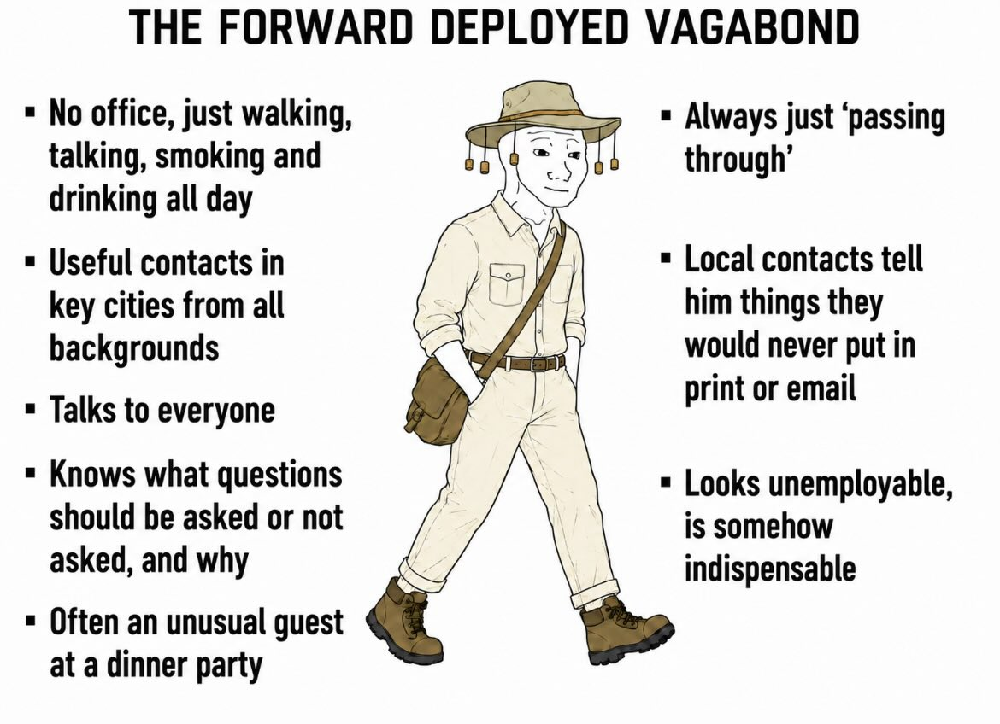

Or: A Defence Of Tacit Humanity

We are entering an era where artificial intelligence — AI — is becoming widespread. Large Language Models (LLMs) are the public face of this technological diffusion, but embodied AI — like robotics — is growing as an industry and will continue to do so, with eventual widespread consumer applications.
Anthropic, OpenAI, Google DeepMind, xAI and their Chinese counterparts will continue to hoover up all written information in our existence. Running parallel, robotics and embodied AI companies pay humans to record themselves interacting with physical items and doing everyday jobs, so as to teach their systems how to replicate this. Elsewhere, companies already exist that attempt to create synthetic human opinions — be they voters or consumers — a secondary market in the perception of what humans think, springing from this same technological wave. Across all fronts, the ability to compress, search, summarise and synthesise any information in the public domain will see the price of public information fall in all cases behind the frontier. For most information work, everyone will be staring at increasingly similar dashboards, produced by increasingly similar models, trained on increasingly similar corpora, optimised against increasingly similar assumptions.
On this path, the circle of non-public, organically human information will become smaller. The price of this untapped information — let us call it Tacit Humanity, for it is made up of small ideas, sparks, intuitions and feelings unable to be copied by these technological systems — will be of real value depending on its quality and its application.
Into this market steps forward the Forward Deployed Vagabond. The character who wears this role must combine several traits — notably, many of them found in the British explorers of centuries past. They must be comfortable being in different cultures and places, their curiosity driven by an underlying love for and fascination with humanity, but one which takes a deeply critical gaze across all new information. They will need to be literate in global and hyper-local affairs: what do municipal officials tend to push back against, and why does that sit downstream of their government's economic push, or recent commodity pivot? Why are the leaders of two but not three petrostates looking to move sovereign wealth assets into nuclear fusion? What are the engineers in the capital city complaining about, despite their recently inflated wages? Which official has been asking for bribes at the local port, and which journalist is moderating their coverage of a firm in hopes of a retirement consultancy gig there?
Sitting at a bar in the early evening, our Forward Deployed Vagabond will be comfortable discussing humans. What makes their fellow drinker tick? What is causing them stress? Do they have a view on why eggs are more expensive now? What are their kids thinking of doing for work? Has it felt hotter here recently? Local contacts will be keen to swap grizzled stories with our FDV, recounting recent trips to sites on the southern coast of Latin America — 'you should see the depth of some of these new mines' — or factories in Vietnam — 'they have a number of workers who have come over the border; I hear they are causing trouble and asking for higher salaries'. It is, at its heart, a romantic role. For you are striving forth into the last moats of genuine humanity, delving into the minds and motivations of a many-thousand-year-old species at a time when technology again marries into our evolutionary futures.
So what value would an FDV ultimately provide?
The emotional instinct. A model will tell you that two petrostates are moving sovereign wealth into fusion. It cannot tell you that the first is doing it because a single deputy minister read a paper and has the ear of the man above him who wants to be promoted faster than his peers. It won't note the tension of the deal, nor the fact that the consultants hired to push through the investments are themselves worried about bloat but are making too much money to express it.
Humidity in the air. A model can analyse one million signals a second through screens and algorithms. But it cannot sit and watch tension among young men building in an arid street on a dry hot afternoon in a sub-Saharan capital. It cannot hear the tinge of excitement in a miner's voice discussing a new prospect further in the forest, nor the sense of burning ambition in a young official's heart as they talk about the future of their state. These are tacit — grown, nurtured and evolved over thousands of years of human evolution.
See for yourself. As synthetic everything floods the senses — synthetic voters, synthetic consumers, synthetic reports cross-referencing other synthetic reports — the scarce and appreciating good becomes ground truth. The FDV is the human who can stand at the lip of the mine and confirm its depth, walk the factory floor and count the undocumented workers, watch ships bottleneck through a blocked strait.
We exist in a moment where information density, availability and synthesisation, where the means of gaining a commercial edge have been sheared to literal milliseconds for quant traders, where the democratisation of satellite imagery has removed the incentive to buy bulk imagery of cars outside megastores, where entire advisories of 'network experts' exist to inform decisions taken many thousands of miles away.
The Forward Deployed Vagabond does not exist to disrupt these, nor to reinvent the wheel. Rather they are best utilised to disturb a monoculture of thought, wherein everyone holds the same beta, reading the same feeds and the same tweets, noting the same messages, grading their own homework in a closed loop fed no fresh input from the world beyond the technological frontier. The FDV therefore complements the model's digital brain, its quant trading team mate, the algorithmically led investment strategy.
This is because the deepest value of the Forward Deployed Vagabond is as a lightning rod for human nature: the standing insurance policy against epistemic monoculture, the human who keeps walking into the last data dark zones and contextualises those cold hard synthetic reports with tacit knowledge. This is a model we have used extensively throughout our history — and it is time to revive it with deliberate strategic precision.